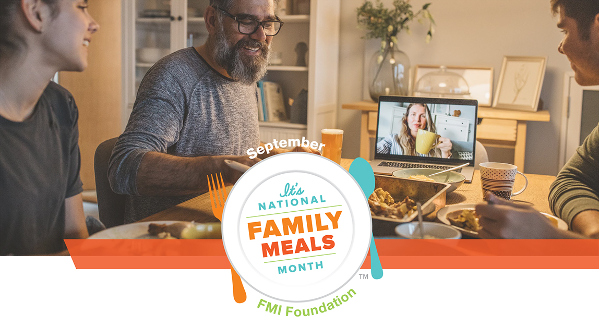
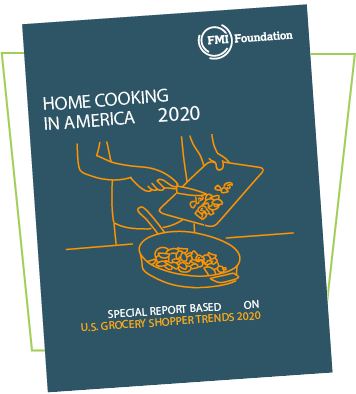
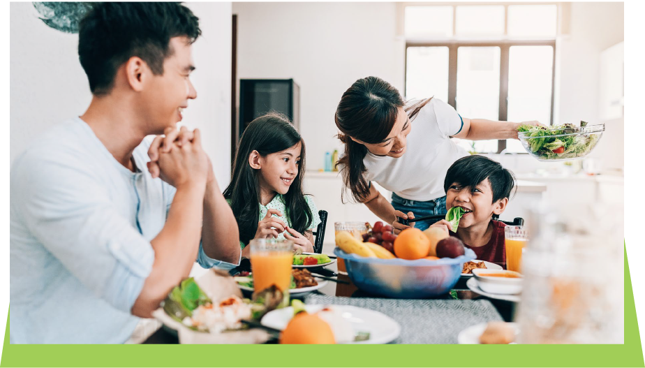
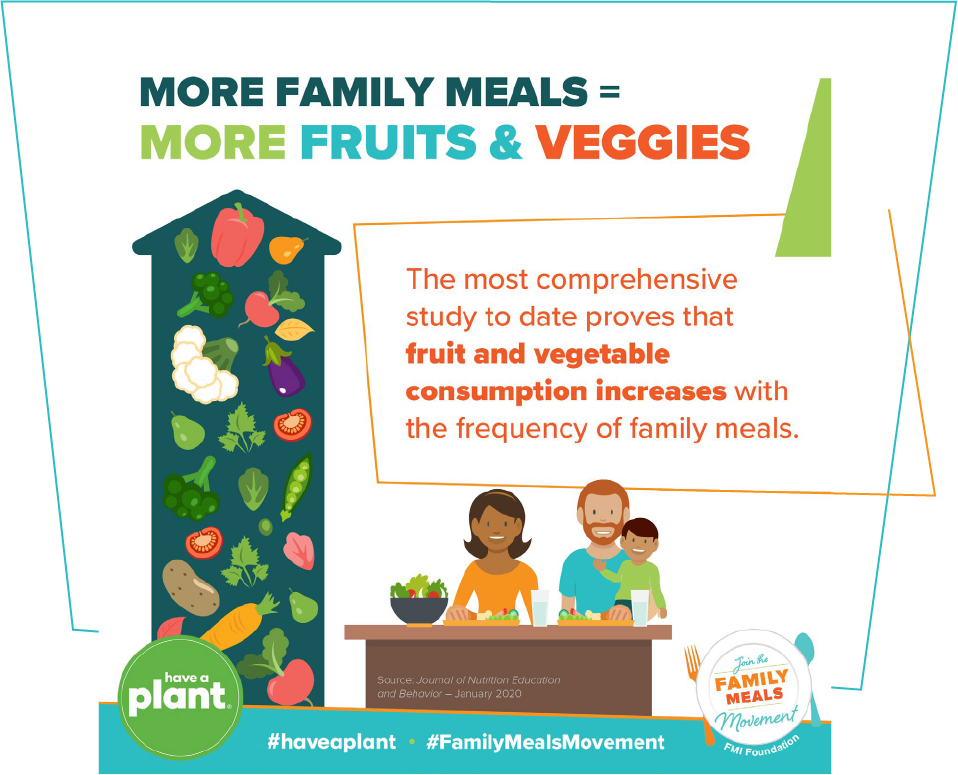
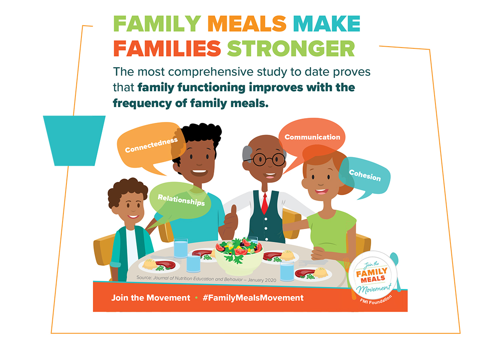
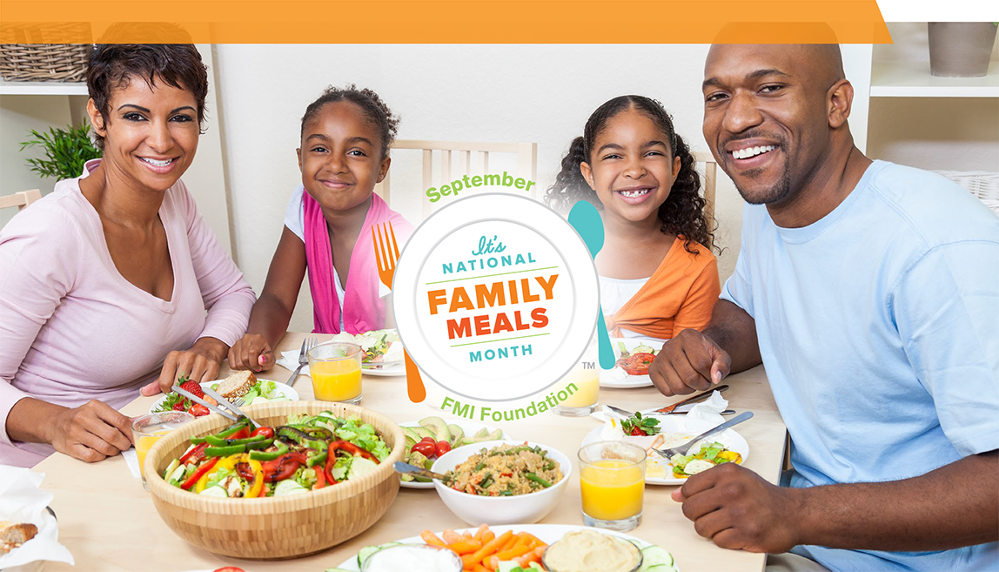

|

|
|
So much has changed since we celebrated National Family Meals MonthTM
in September 2019.
|
|
But the need for family meals has never been more important. This email contains lots of
news and
resources
to help you
finalize your plans for National Family Meals Month 2020.
|
|
For
starters
|
|
Americans
are
cooking
|
|
More
at
home.
|
|

|
The FMI Foundation has released a new study, Home Cooking in America 2020. The report
shows that
during the COVID-19 pandemic, 40% of American adults say they are now cooking
more. In
addition, 23% say they are planning more meals in advance and 18% say they are trying more
new dishes.
|
|
Click
here to
learn more about this study. |
|
So, is there any benefit in continuing to promote benefits of family meals?
|
|
YES! Now—more than ever—we need to encourage families to recognize all the
physical and
emotional benefits they have
been getting from the additional family meals during COVID-19. And we need to encourage them
to
|
"STAY
STRONG
WITH
FAMILY
MEALS!"
|
|

|
|
Family meals are proven to be one of the best healthy habits.
|
|
It’s no coincidence that September is when our country celebrates both National Fruits &
Veggies Month
as well as
National Family Meals Month. The most comprehensive study to date published this year in the
Journal of
Nutrition Education and Behavior provides definitive proof that family meals improve
fruit and
vegetable
consumption.
|
|
It is clear that family meals are the foundation for a healthy nation.
|
|

|
|
Family meals keep us connected.
|
|
The same study in the Journal of Nutrition Education and Behavior proves that family
connectedness, communication and
relationships improve with increased family meals. What could be more important for managing
difficult
life moments
and/or celebrating joys together?
|
|

|
|
Show
your clients how
|
|
Family
meals
are
the
|
|
Foundation
for
a
|
|
healthy
nation.
|
|
The FMI Foundation has developed lots of tools to help you show Americans how to keep up the
family
meals momentum.
|
|
Click here to access the growing collection of toolkits and
creative
assets to take your National Family Meals Month
activities to the next level.
|
|

|